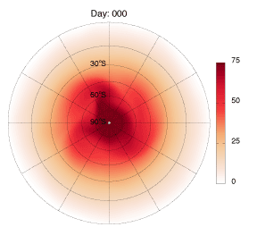

I am a postdoctoral associate of the Department of Earth, Atmospheric and Planetary Sciences at the Massachusetts Institute of Technology working with Alan Plumb. I am broadly interested in the chemistry and dynamics of the atmosphere. In particular, my research has thus far focused on the interactions between atmospheric chemistry and dynamics, and how these elements influence our climate and air quality.
Current and Past Projects:
Stratospheric Mixing
Interactions of Atmospheric Chemistry and Climate
Intercontinental Effects of Oxidant Levels on Aerosol Formation
